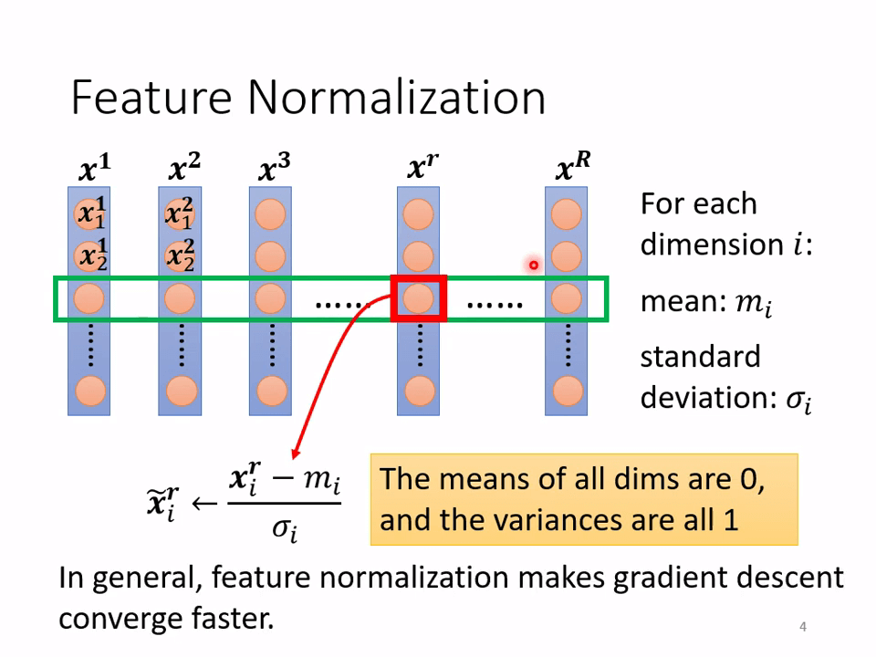
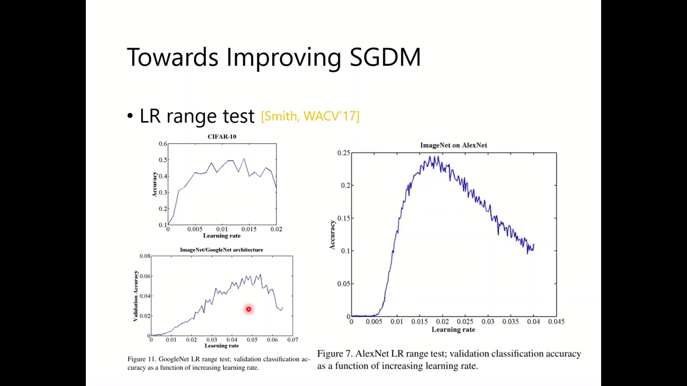
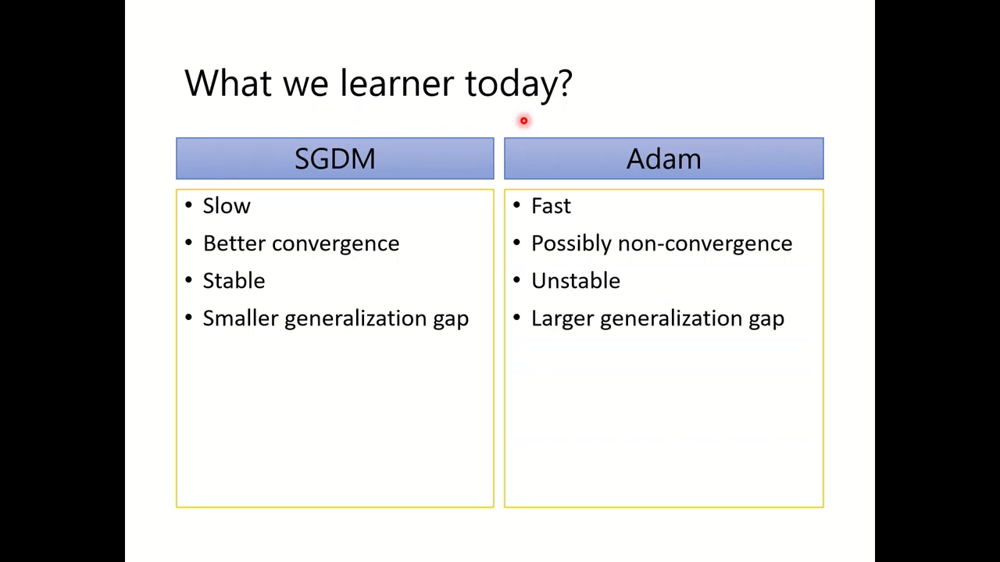

Preparation
【機器學習 2021】機器學習任務攻略
Framework of ML

机器学习的基本框架：在一个数量为 的数据集中，分成含有 个数据的训练集的输入 和含有 个数据的测试集的输入 。
输入 经过机器学习后转为输出 。

对于训练集的数据：
训练的过程：
- Step 1: function with unknown，定义函数模型
- Step 2: define loss from training data，定义损失函数
- Step 3: optimization，优化函数模型，找到 使得 最小
对于测试集的输入：
使用训练好的模型 给测试集的输入打上标签 ，将这些数据上传给 Kaggle 平台。
General Guide

如果你的神经网络训练得到了不理想的结果：根据 training data 的 loss 和 testing data 的 loss，分析自身的神经网络存在什么样的问题。
- loss on training data is large
- model bias 欠拟合
- make your model complex
- optimization 优化函数有问题
- model bias 欠拟合
- loss on training data is small
- loss on testing data is large
- overfitting 过拟合
- more training data 尝试获得更多数据
- data augmentation 数据增强，从而弥补训练数据集的不足，达到对训练数据扩充的目的
- make your model simpler 简化模型
- mismatch 训练集和测试集不属于同分布
- overfitting 过拟合
- loss on testing is samll
- 神经网络性能良好
- loss on testing data is large
Model Bias

模型本身太简单，无论如何 optimization，都无法使得 变小。就好比在大海捞针，而针根本就不在搜索到海域中。
解决方法：重新设计模型使得其考虑更多特征/设计更多神经元或层。
Optimization Issue

正如梯度下降方法找到了极小值却没有找到最小值一样。这就好比在大海捞针，针在海域中却没有办法捞到。
Model Bias v.s. Optimization Issue


当神经网络模型越来越复杂时，而测试集和训练集的 均不降反增，则考虑是 Optimization issue。

- 比较训练集和测试集中的 loss
- 从更容易优化的浅层网络（或其他模型）开始
- 如果更深的网络不能获得更小的数据损失，那么就存在优化问题
- 解决方案：更强大的优化技术（下一课）
Overfitting

模型在训练集 loss 小，但在测试集 loss 大。
极端例子：
对于训练集的数据：
设计出一个模型：
这个模型只检查输入的数据是否存在与训练集中，如果存在就返回训练集中对应的输出，否则返回随机数。很明显这个模型没有什么任何东西。
这个模型在训练集中 loss 为 0，但是在测试集 loss 很大。

当模型太复杂时，出现过拟合现象。

解决方案：简化模型、尝试获得更多数据、数据增强。
如识别一张猫，通过镜像、裁剪等方式获得更多猫的数据，但是翻转就不太合理。

其他解决方案：
- 减少参数，CNN 属于全连接层，之所以在图像识别中表现好，就是通过卷积、池化等操作减少了参数。
- 减少特征
- 手动终止训练轮次
- 正则化
- 随即丢弃某些神经元

如果对模型的限制太多，会出现欠拟合现象。
像一条直线难以描述图中的点。

模型的复杂性与测试集、训练集中的 loss 之间的关系。尝试找到一个适中的模型，使得测试集和训练集的 loss 都较小。

对于作业，可以多次提交训练的模型，选择一个在测试集中的 MSE 较小的模型提交。但这不是一个好方法，此法选出的在共有测试集中的 MSE 并不一定表示好的泛化能力，可能在私有测试集中泛化能力差。

This explains why machine usually beats human on benchmark corpora. 这就解释了为什么机器在基准语料库上通常胜过人类。
有些广告会说自己训练的模型在语音识别上表现得比人类好，很可能就是测试集是在特定的状态下。

将原先的训练集分为训练集和验证集，使用交叉验证方法
在使用训练集对参数进行训练的时候，经常会发现人们通常会将一整个训练集分为三个部分（比如 mnist 手写训练集）。一般分为：训练集（train_set），评估集（valid_set），测试集（test_set）这三个部分。这其实是为了保证训练效果而特意设置的。其中测试集很好理解，其实就是完全不参与训练的数据，仅仅用来观测测试效果的数据。而训练集和评估集则牵涉到下面的知识了。
因为在实际的训练中，训练的结果对于训练集的拟合程度通常还是挺好的（初始条件敏感），但是对于训练集之外的数据的拟合程度通常就不那么令人满意了。因此我们通常并不会把所有的数据集都拿来训练，而是分出一部分来（这一部分不参加训练）对训练集生成的参数进行测试，相对客观的判断这些参数对训练集之外的数据的符合程度。这种思想就称为交叉验证（Cross Validation）。

K 折交叉验证，初始采样分割成 K 个子样本，一个单独的子样本被保留作为验证模型的数据，其他 K-1 个样本用来训练。交叉验证重复 K 次，每个子样本子样本)验证一次，平均 K 次的结果或者使用其它结合方式，最终得到一个单一估测。这个方法的优势在于，同时重复运用随机产生的子样本进行训练和验证，每次的结果验证一次，10 折交叉验证是最常用的。
Mismatch

回到上一堂课，由于上一堂课的存在，使得 2022/2/26 即使是周末也获得了较高的播放量。

这是由于训练集和测试集不属于同分布导致的。如训练集是真实的图片，而测试集是简笔画。解决方法见作业 11。
【機器學習 2021】類神經網路訓練不起來怎麼辦 -一-：局部最小值 -local minima- 與鞍點 -saddle point-

Optimization Fails: 随着迭代次数的增加，难以使 training loss 变小，梯度极其接近于 0。
原因：
- local minima：没有任何方向找到更小的值
- saddle point：鞍点，虽然梯度为 0，但是有方向找到更小的值 escape。

可以使用泰勒展开估计 附近的 值。
其中 是梯度，是一个向量：
是二阶导数矩阵，黑塞矩阵：

可以用 Hessian 矩阵判定此时梯度为 0 时的点是极小值点还是鞍点，方法是计算 的特征值。
当 时，泰勒展开式简化为
把 记作 ：
- 对任意的 ，如果 ，则 的所有特征值均为正，该点是 local minima
- 对任意的 ，如果 ，则 的所有特征值均为负，该点是 local maxima
- 如果存在 使 ，存在 使 ，该点是 Saddle point

举例，对于模型 ，其 的函数图像如图所示， 是一个 saddle，左下角和右上角存在许多 minima。

当 时， 为零向量，

当遇到鞍点情况时，不必担心 帮助我们找到更新方向！
只要沿着特征值为负对应的特征向量的方向走即可。

举例，当 时， 为零向量，， 的特征值
对应的特征向量 ，只要沿着 的方向走就可以逃离鞍点继续减少 loss 值。
但此方法在实际应用中用的较少。
Saddle Point v.s. Local Minima

在低维封闭的空间中，在高维未必封闭。

如在 2 维空间中是 local minima 的点在 3 维空间中可能是 saddle point。当你的参数较多时，local minima 就很少了。
local minima 的比重较少是有实验数据支撑的。在梯度为 0 的点中，特征值为正 / 特征值 总是较低。
总结，当梯度下降方法训练速度较慢时：
- 损失函数曲线较平缓：
- 遇到鞍点：
- 遇到极值点：
【機器學習 2021】類神經網路訓練不起來怎麼辦 -二-：批次 -batch- 與動量 -momentum-
Review：Optimization with Batch

在机器学习过程中，通常会把训练集分成多个 Batch 来计算。
1 次 epoch 就是遍历所有 batch 的过程，每次 epoch 都会随机打乱（shuffle）每个 batch。
Small Batch v.s. Large Batch

大的 Batch（LB）好还是小的 Batch（SB）好？
极端例子
假设有包含 20 个样本的数据集：
当 Batch size = 20 时，即不使用 Batch 和 当 Batch size = 1 时，即 每个 Batch 仅包含一个数据时：
从直觉来看：
-
LB 训练时间长，但是训练效果好
-
SB 训练时间短，但会受噪声影响

实际上，由于 GPU 有强大的并行计算能力，只要 Batch 的大小不过大（没有超出 GPU 的并行计算能力），每次 update 的速度几乎相差无几。

而对于一次 epoch 来说，由于 SB 每次 epoch 需要的 update 次数过多，导致每次 epoch 耗时不如 LB。

LB 的训练效果一定比 SB 好吗？由于 LB 更可能出现 Optimization 现象，在训练 CIFAR-10 中，LB 有时效果并不如 SB。

一种解释：
由于 SB 需要多个 Batch，不同的 Batch 对应不同的损失函数曲线，当某个 Batch 遇到极小值时，其他 Batch 不一定遇到极小值。

在论文中得到结论，在多个实验中，SB 与 LB 在训练集中的 Accuracy 接近，在测试集中，SB 的 表现要比 LB 好。

为什么说 SB 在测试集表现更好？（以下解释尚待研究）
Local Minima 有着 Flat Minima 和 Sharp Minima 之分，Flat Minima 在测试集中误差较小而 Sharp Minima 在测试集中误差较大。
SB 往往找到 Flat Minima，而 LB 往往找到 Sharp Minima。

总结：
| 小 Batch | 大 Batch | |
|---|---|---|
| 更新速度（没有并行计算时） | 快 | 慢 |
| 更新速度（有并行计算时） | 几乎相同 | 几乎相同（不是特别大时） |
| epoch 耗时 | 长 | 短（优势） |
| 梯度 | 有噪声 | 平缓 |
| 优化 | 好（优势） | 差 |
| 泛化能力 | 好（优势） | 差 |
Batch size 是一个超参数，需要自行取舍。

关于 Batch size 的取舍和优化的相关论文：
Momentum

思考现实世界，在一个球从坡上划下，遇到低谷并不会马上停止，而是由于惯性再往前前进一段距离。

常规的梯度下降方法只往梯度值最陡的地方搜索。


如果将动量的思想加入梯度下降中，搜索方向不再仅仅只往梯度最抖的方向去，而是考虑之前的移动方向，两者向量之和作为下一次搜索方向。

总结：
-
临界点具有零梯度
-
临界点可以是鞍点或 local minima
- 可以使用 Hessian 矩阵判定
- 可以沿着 Hessian 矩阵的特征向量方向避开鞍点
- Local minima 比较少见
-
较小的 batch 和 momentum 有助于避开临界点。
【機器學習 2021】類神經網路訓練不起來怎麼辦 -三-：自動調整學習速率 -Learning Rate-
Adaptive Learning Rate

当误差表面太崎岖时，考虑使用自动调整学习速率的算法。

当 loss 难以再下降时，可能导致的原因不只是梯度太小，也有可能是学习率过大。
如图所示，当迭代次数增加时，梯度并没有变得更接近与 0。

这张图背后的模型是怎样训练出来的呢？下面这个模型需要特别的技巧才能将其训练出来。
在大多数的模型训练过程中，很多时候 loss 等于 0 但 gradient 还是很大，所以遇到 critical point 的几率还是较小的。

当 error surface 是一个 convex 形，x 是最小值。
如果学习率过大（），可能在山脊两侧反复横跳而搜索不到山脊里。
如果学习率过小（），可能训练极多的轮次都无法找到最小值。

考虑修改梯度下降的学习率公式，不同的参数对应着不同的学习率。
将 添加一个参数 ，变为 。
Root Mean Square

至于 ，有多种定义方式，对于方法 Root Mean Square，定义 ，使得学习率的大小考虑之前的梯度大小。

Adagrad 算法中就使用了 Root Mean Square。越陡的曲线得到的 就越大，对应的学习率就越小。
RMSProp

之前的的 error surface 是一个凸函数，梯度是在不断减小的，但如果遇到了这样比较复杂的情形时，梯度一会增加一会减小，我们就希望学习率能够动态的自适应。

RMSProp 使得 的值只与上一个梯度的大小有关。

最近的梯度影响较大，而过去的梯度影响较小。
当遇到陡坡时，就会踩刹车。

Adam 算法就是 RMSProp 与 Momentum 的集合。
Learning Rate Scheduling

之前的算法得到的训练曲线如左图所示，训练曲线要像右边那样，可以让 随着训练次数的增加而变化。
Learning Rate Decay 方法让 随 的增加而减小。

Residual Network 中就使用了 Warm up 方法来调节学习率。
Arxiv 是一个收集论文的好网站，论文网址中 1512 表示这篇文章是在 15 年 12 月发表的。
Transformer 也使用了 Warm up 方法。

Warm up 方法先让 增加，而后下降。
RAdam 方法是对 Adam 方法的一种改进，引入了 Learning Rate Scheduling。

在最后得到的学习率公式 中， 动量考虑了之前梯度的方向， 考虑了之前梯度方向的大小，因此两者虽然一乘一除，却不会抵消。

额外内容，说明 Optimization 这个方面还有很多东西需要讲解。

下一讲探讨如何简化 Error surface。
【機器學習 2021】類神經網路訓練不起來怎麼辦 -四-：損失函數 -Loss- 也可能有影響

本节课讲述了为什么 Classification 要使用 交叉熵损失函数，要了解更多……

对于回归模型，输入 在经过模型后得到输出 。
如果将分类问题用回归问题解决，会得到一个向量对应各个类。
各个向量都有编号，如果把各个类用 1 个数字表示，则机器可能会认为各个类之间存在大小关系。

因此使用独热编码来表示各个类。

对于分类问题，在得到最终的输出之前要进行 softmax 处理，使所有的数据限制在 0 和 1 之间。

Softmax 公式：，拉大了各个数据之间的比值，较小的数据会更加接近于 0。
在 pytorch 中，Softmax 方式几乎与分类问题绑定，不需要写 Softmax 的代码就会进行 Softmax 操作。

对于分类问题，损失函数都是使用交叉熵损失函数而不是 MSE，因为可以用数学方式证明交叉熵损失函数与最大似然估计等价。

用例子说明使用交叉熵损失函数而不是 MSE，MSE 的平面太平坦不利于梯度下降。
这说明损失函数的选择也会影响最终的训练结果。
【機器學習 2021】類神經網路訓練不起來怎麼辦 -五-：批次標準化 -Batch Normalization- 簡介
Changing Landscape
Normalization 是一种让 Loss L 平面由陡峭变得平缓的方法，如图所示，如果 的范围比 大很多，会导致 Loss L 变得陡峭难以收敛，尝试将输入 映射到一个相同的范围中。
Feature Normalization

对于一组数据向量 ，对这组的数据的第 个维度，求出它们的平均值 和标准差 ，将这个维度的数据 进行变换 ，使得这组数据的平均值变为 0，标准差变为 1。
一般来说，特征归一化会使梯度下降转换更快。
Considering Deep Learning
对于深度神经网络，经过权重 相乘后的 也会拥有不同的范围，也需要 normalization。对于使用 Sigmoid 的激活函数，normalization 通常在激活函数之前，因为 Sigmoid 函数在接近于 0 的位置梯度较大。
因此对 中的数据，计算其
Batch Normalization
更新 ，如果将所有数据都进行这种操作，这会是一个很费时的操作，因此分批次进行这种操作，称之为 Batch Normalization。Batch 的大小必须足够大使得 Batch 的 和 与所有数据的相近。
在某些情况下我们可能不希望 的平均值和标准差为 0 和 1，而是为其他值，那我们将 按公式： 进行更新，这样得到的 的平均值和标准差分别为 和 。并且我们也可以把 和 当做网络的参数，让网络自己去学习 和 的取值分别为多少才最适用。
Batch normalization - Testing
在使用 Testing Data 时没有 batch 那么我们怎么去计算用于 Batch Normalization 的 和 呢？
理想的做法：在训练过程中我们计算每个 batch 的 和 是为了代替整个 training data 的平均值和标准差，所以我们在测试的时候也可以采用整个 training data 的平均值和标准差。
但是问题是有可能 training data 很大，去计算平均值和方差并不方便；也有可能 training data 是分 batch 进入的，很可能并没有留下来，那根本没办法计算平均值和方差。
可实操的做法：将训练过程中所有 batch 的 和 都保存下来，然后按权重求和得到用于 testing 的 和 。
这篇论文 [1502.03167] Batch Normalization: Accelerating Deep Network Training by Reducing Internal Covariate Shift (arxiv.org) 展示了经过 BN 后，确实能提高收敛速度。
Internal Convariate Shift?
BN 的原论文认为 BN 解决了**内部协变量偏移（Internal Convariate Shift）**的问题，但论文 1805.11604 How Does Batch Normalization Help Optimization? (arxiv.org) 否认这个观点，认为 BN 使 和 具有相似的统计数据实验结果不支持上述想法。
实验结果（和理论上的分析）支持批量正常化改变误差表面的形状。
这表明，BatchNorm 对训练的积极影响可能有些偶然性。
更多 Normalization 方法：
- Batch Renormalization
- Layer Normalization
- Instance Normalization
- Group Normalization
- Weight Normalization
- Spectrum Normalization
【機器學習 2022】再探寶可夢、數碼寶貝分類器 — 淺談機器學習原理
为什么说参数越多越容易导致过拟合?
回到宝可梦/神奇宝贝的分类问题，确定一个未知参数的函数（基于领域知识）。
通过观察认为神奇宝贝的画风要比宝可梦更加复杂。我们将输入的数据进行 Edge detection 算法处理后得到边缘图，计算其中非黑色像素点数量作为图像的特征。
对此我们找到一个函数 ，通过判断经过边缘检测后的图片的非黑色像素点数目是否超过阈值 来判断这幅图片是宝可梦还是神奇宝贝。
定义 ， 为候选函数的数量。（模型的 “复杂性”）
便于讲解直观，将 Error rate 作为损失函数而不是交叉熵损失函数。
如果我们能找到所有的宝可梦和神奇宝贝 ${\color{Red} \mathcal{D}_{all} } $，我们就可以找到最佳阈值 ${\color{Red} \mathcal{h}^{all} } $。
{\color{Red} \mathcal{h}^{all} }=arg\min_hL(h, {\color{Red} \mathcal{D}_{all} }) 而事实上，我们只能找到 ${\color{Red} \mathcal{D}_{all} } $ 的子集 {\color{Blue}\mathcal{D}_{train}}：
{\color{Blue}\mathcal{D}_{train}}=\{(x^1,\hat y^1),(x^2,\hat y^2),...,(x^N,\hat y^N)\}
(x^n,\hat y^n)\sim {\color{Red}\mathcal{D}_{all}}
我们只能训练出 {\color{Blue}h^{train}}=arg\min_hL(h,{\color{Blue}\mathcal{D}_{train}})
由于我们实际上难以获得 {\color{Red}\mathcal{D}_{all}}，因此无法计算 {\color{Red}h^{all}}=arg\min_hL(h,{\color{Red}\mathcal{D}_{all}})。我们只能期望 L({\color{Blue}h^{train}},{\color{Red}\mathcal{D}_{all}}) 和 L({\color{Red}h^{all}},{\color{Red}\mathcal{D}_{all}}) 相近。
通过全部数据集求得 {\color{Red}h^{all}}=4824,L({\color{Red}h^{all}},{\color{Red}\mathcal{D}_{all}})=0.28
从训练集 1 求得 ，其 L({\color{Blue}h^{train1}},{\color{Blue}\mathcal{D}_{train1}})=0.27 甚至比 L({\color{Red}h^{all}},{\color{Red}\mathcal{D}_{all}})=0.28 还要小，此时 L\left({\color{Blue}h^{\text {train1 }}}, {\color{Red}\mathcal{D}_{\text {all }}}\right)=0.28。
而在一个不太好的数据集 2 中，求得 ，L({\color{Blue}h^{train2}},{\color{Blue}\mathcal{D}_{train2}})=0.20，此时 L\left({\color{Blue}h^{\text {train2 }}}, {\color{Red}\mathcal{D}_{\text {all }}}\right)=0.37。
我们需要 L({\color{Blue}h^{train}},{\color{Red}\mathcal{D}_{all}})-L({\color{Red}h^{all}},{\color{Red}\mathcal{D}_all})\le \delta。需要从 中找到任意的函数 ，使得 |L({\color{Green}h},{\color{Blue}\mathcal{D}_{train}})-L({\color{Green}h},{\color{Red}\mathcal{D}_{all}})|\le \delta/2。
那么随即找到不好的训练集的概率是多少呢？
我们假设蓝点是好的训练集，黄点是不好的训练集。
在不好的训练集中，分别是因为 导致的。
因为有重合的原因，
根据数学公式，P({\color{Blue}\mathcal{D}_{trian}}\ is\ \mathbf{bad})\le|\mathcal H|\cdot 2\exp(-2N\varepsilon^2)，如何让 P({\color{Blue}\mathcal{D}_{trian}}\ is\ \mathbf{bad}) 变得更小？
尝试提高 或减小 。
提高 使 P({\color{Blue}\mathcal{D}_{trian}}\ is\ \mathbf{bad}) 变小。
减小 使 P({\color{Blue}\mathcal{D}_{trian}}\ is\ \mathbf{bad}) 变小。
减小 会使得 L({\color{Red}h^{all}},{\color{Red}\mathcal{D}_{all}}) 变大，使得模型泛化能力变差。
有什么办法可以让 变小而让 L({\color{Red}h^{all}},{\color{Red}\mathcal{D}_{all}}) 不那么大吗？Deep Learning。
Extra Material
-TA 補充課- Optimization for Deep Learning-由助教簡仲明同學講授-
基础数学知识：
- -strong convexity 强凸性
- Lipschitz continuity 利普希茨连续
- Bregman proximal inequality 布雷格曼近端不等式
完全没听说过也没关系…
我们之前已经学过的 Optimization 算法：
- SGD, stochastic gradient descent, 随机梯度下降法
- SGDM
- Adagrad
- RMSProp
- Adam
一些标记符号：
- ：模型在 次时的所有参数统称
- ： 的梯度，用于更新
- ：从时间步长 0 到时间步长 累积的动量，用于计算
Optimization 的目标，找到相应的 使得 或 最小。
On-line v.s. Off-line
举个例子, 在玩俄罗斯方块的时候, 你只能看到当前的方块是什么(有可能还能看到下一个方块是什么), 你需要根据当前的方块进行决策, 这种基于当前信息的决策过程就是在线算法(online algorithm). 而当你能知道整个方块序列是什么的时候, 你可能会有不一样的决策, 比如"这个方块可以放在左边这个地方, 这样和 10 步以后的那个方块就能凑在一起消掉", 这种基于全局信息的决策过程就是离线算法(offline algorithm).
在机器学习(包括深度学习)中, "方块"指的是数据. 我们通常做的是离线学习(offline learning), 即我们手中有全部的训练数据. 而**在线学习(online learning)**数据可能是以流式的形式, 我们一次只能看到部分的数据, 我们只能根据目前看到的这部分的数据进行训练.
最基本的随机梯度下降算法。
考虑动量因素的 SGDM。
如果前几个时间步的梯度非常大怎么办…Adagrad。
RMSProp：指数移动平均(EMA)的梯度平方不是单调增长的。
Adam 使用了 SGDM 和 RMSProp 的结合。
Adagrad、RMSProp 和 Adam 都自动调整了学习率。
知名的框架：BERT、Transformer、Tacotron 使用了 Adam，YOLO、Mask-R-CNN、ResNet 使用了 SGDM。
诸多论文显示 Adam 和 SGDM 是目前比较好的 Optimization algorithm。
- Adam：训练速度快、泛化差距大、不稳定
- SGDM：稳定、泛化差距小、收敛性更好（？）
SWATS：结合了 Adam 和 SGDM，先使用 Adam 快速收敛，再使用 SGDM 保持稳定。
尝试改进 Adam：
- Trouble shooting：在训练的最后阶段，大多数梯度都很小，没有信息，而一些小批次很少提供大的信息梯度。
- Adam 一次更新的最大移动距离大致上限为
- 非信息梯度比信息梯度贡献更多
- 在训练的最后阶段，大多数梯度都很小且没有信息，而一些小批量训练很少提供大的信息梯度
18 年提出的 AMSGrad：
- Reduce the influence of non-informative gradients 减少无信息梯度的影响
- Remove de-biasing due to the max operation 消除因最大操作而产生的偏置
- Monotonically decreasing learning rate 学习率单调下降
- Remember Adagrad vs RMSProp?
助教认为这不一定合理。
- 学习率要么非常大（对于小梯度），要么非常小（对于大梯度）
19 年提出的 AdaBound，使用 Clip，助教认为 “That’s not ‘adaptive’ at all…”
- 自适应学习率算法：随时间动态调整学习率
- SGD 类型的算法：固定所有更新的学习率…小的学习率太慢，大的学习率则效果不好

17 年提出 LR range test。
17 年提出的 Cyclical LR。
- 学习率：由 LR 范围测试决定
- 步长：几个 epoch
- 通过改变学习率避免局部最小值
17 年提出的 SGDR。
17 年提出的 One-cycle LR：warm-up + annealing 退火 + fine-tuning
Does Adam need warm-up？实验表明，在前 10 个步骤中，梯度分布失真
20 年提出的 RAdam。
| RAdam | SWATS | |
|---|---|---|
| Inspiration 灵感 | 训练开始时梯度失真导致自适应学习率不准确 | Adam 的非收敛性和泛化差距，SGDM 的慢训练 |
| How？ | 应用预热学习的方法来减少不准确的自适应学习率的影响。 | 通过先应用 Adam，然后应用 SGDM，结合其优势 |
| Switch | SGDM to RAdam | Adam to SGDM |
| Why switch | 在训练开始时， 的方差的近似值是无效的。 | 追求更好的泛化能力 |
| Switch point | 当近似值变得有效时 | 一些由人类定义的标准 |
19 年提出的 Lookhead，适用于任何 Optimization algorithm。
- 1step back: avoid too dangerous exploration - More stable
- Look for a more flatten minimum - Better generalization
1983 年提出的 NAG。
16 年提出的 Nadam。
在 正则化中：
那么 SGD、SGDM、Adam 是否要对后面的 进行处理？
17 年认为是要的。
其他帮助 optimization 的方法：
- Shuffling 打乱
- Dropout 丢弃
- 15 年：加入高斯噪声：
帮助 Optimization 的方法：
- Warm-up
- 09 年 Curriculm learning 课程学习，模仿人类的学习过程，主张让模型先从容易的样本开始学习，并逐渐进阶到复杂的样本和知识。
- Fine-tuning 从其他已经训练好的模型为基础继续训练。
- Normalization
- Regularization
SGD 类：SGD、SGDM、Learning rate scheduling、NAG、SGDWM
Adam 类：Adagrad、RMSProp、Adam、AMSGrad、AdaBound、Learning rate scheduling、RAdam、Nadam、AdamW

| SGDM | Adam |
|---|---|
| 训练慢 | 训练快 |
| 收敛性更好 | 收敛性不一定好 |
| 稳定 | 不稳定 |
| 泛化差异小 | 泛化差异大 |
SGDM 常用在 CV 上：图像分类、图像分割、对象识别。
Adam 常用：NLP、语音合成、GAN、强化学习。
通用的 Optimizer 是不存在的。